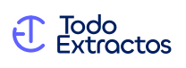
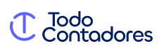
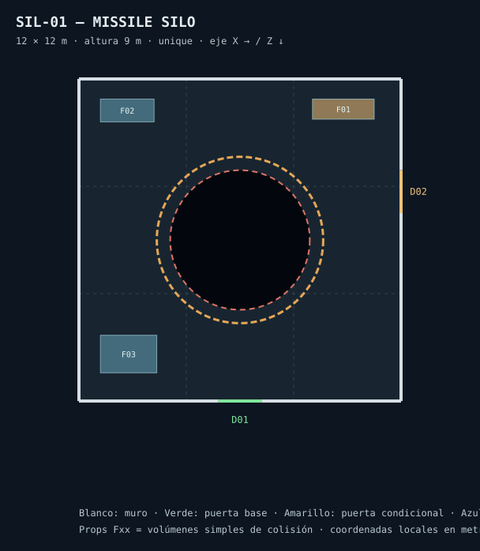
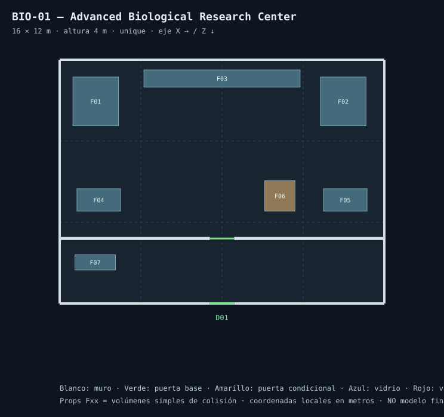

I turn complex ideas into clear digital experiences.
I'm Esteban — a multidisciplinary UX/UI and visual designer with 10+ years connecting user needs, business thinking and front-end implementation. From structured workflows to expressive digital identities, I design with purpose and build with care.
Proof of thinking.
Independent case studies, original identities and genuine work artifacts. Concept illustrations are labeled where used.

Making financial complexity manageable.
Structured reviews, human oversight and rule-based categorization for bank statement workflows.
Explore case study ↗One journey across the workshop.
Connecting appointments, diagnostics, approvals and work orders into a coherent service experience.
Explore case study ↗
A simpler voice for a specialized service.
Brand-led web communication using visual hierarchy, responsive layouts and bilingual content.
Explore case study ↗Creating the rules behind the interface.
An original design-system exploration connecting visual foundations with practical front-end code.
Explore case study ↗From systems to spaces.
Original spatial design artifacts from ASH-13: graybox plans, not final game renders. These show precise thinking behind interactive environments.


These are original project planning artifacts; they are not screenshots of a released game.
Understand. Structure. Design. Deliver.
My practice combines information architecture, research-informed interaction design, typography, visual systems and implementation. I value patterns that teams can reuse, interfaces that people can understand and creative exploration that stays connected to a real problem.
Design thinking with an engineering mindset.
Based in Buenos Aires, Argentina, I work across product discovery, UX/UI, visual design and front-end delivery. I use Figma, design systems, Angular, React and practical AI-assisted workflows to move from ideas to tangible experiences. Professional client work is discussed only when publication rights are clear.
Let's make something useful.
Available for product and creative design conversations, remote collaboration and multidisciplinary teams.